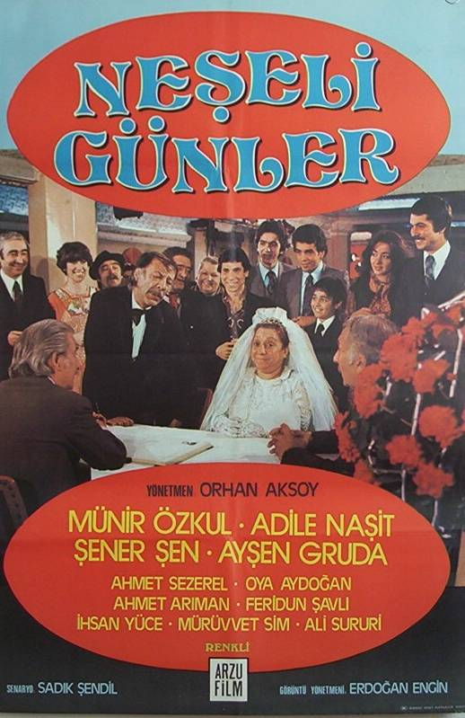
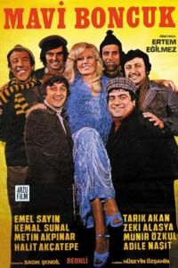
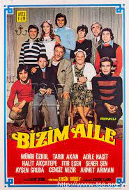

The history of Turkish cinema dates back to the last period of the Ottoman Empire. Although there is no clear information, it is believed that the arrival of the first cinema on the territory of Anatolia occurred during World War II. It is estimated that it was during the reign of Abdul Hamid. The establishment and rise of cinema as an industry in Turkey is related to World War II. It begins after World War II. The emergence of new directors and actors who will make a mark on the coming period will also be the beginning of the “Yeşilçam Cinema” as we know it today. after the 1950s, especially in Anatolia, Yeşilçam films, which began to become widespread with back-to-back movie theaters, begin to attract a large audience after that. As new films are made every day, new faces appear on the screen. It is a period when more than 200 films are produced annually in different genres, such as comedies, dramas, horror films. It is a golden era for our cinema, Yeşilçam.
THE YESILCAM MOVIES THAT I RECOMMEND TO YOU

Neşeli Günler(1978)
Kazım Efendi (Munir Özkul) and Saadet Hanım (Adile Naşit) are a couple who are pickling in their own way. they live together with their 6 children. They are constantly fighting over pickle juice. One day he's at home again, so they start arguing. The discussion grows. Eventually, Kazım Efendi takes all three of his children and leaves the house. Ms. Saadet takes the other three children. Decoupled after many years, the brothers find each other by chance and want to get together. But this will not be so easy, because their parents have been offended for many years.
IMDB Rating: 8.7/10

Mavi Boncuk(1974)
6 friends go to have fun at a casino where Emel Sayın works. They think that the money in their pockets will cover the fix menu in the newspaper ad. But when the account does not match the money in the ad, they first object to the high-coming account, and then they are mistreated. In order to take revenge on the owner of the casino, they decide to kidnap the headliner of the casino, Emel Sayın. Having successfully implemented their plans, the friends hide Emel Sayın in the attic of Baba Yaşar's house. Over time, a rapprochement arises between Emel Dec and his captors.
IMDB Rating: 7.9/10

Bizim Aile(1975)
Yasar Usta's factory friend Talat Usta and his wife are trying to marry Yasar Usta and Melek Hanım.These efforts are successful, but Yasar Usta has four children and Melek Hanım has three children. But these children could not get along with each other,they were constantly fighting. When Alev's father, the girlfriend of Ferit, one of the sons of Melek Hanım, finds out that Alev is dear to Ferit, he does not leave Yasar Usta and his family alone and fires the first Yaşar Usta from his job, then throws the family out of their home. Yasar meets with Master Alev's father.Alev's father, Mr. Saim, realizes his mistake and gives their house back to them.
IMDB Rating: 8.4/10
Hababam Sınıfı(1975)
It is a film that tells funny and touching stories about the place where a class of dull students whose student lives are based on haughtiness and laziness live in a private Çamlıca High School. Thanks to their sharp wit, the students of this colorful character, who play all their teachers in the palm of their hands and bring down the school order and education system, are the most naughty class of both the school and our cinema.However, when this reign is shaken by the arrival of the new assistant principal appointed to the school, the Hababam Class is subjected to unforgettable lessons by Mahmut Hoca.